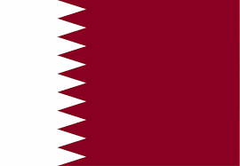
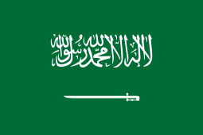

A AFC é a confederação de futebol da Ásia. Para a Copa do Mundo de 2022, 4 países se classificaram + Páis sede + 1 da repescagem:
(Da esquerda para a direita: Catar, Irã, Coréia do Sul, Arábia Saudita, Japão, Austrália.)